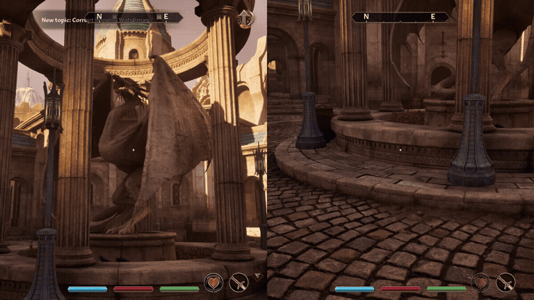
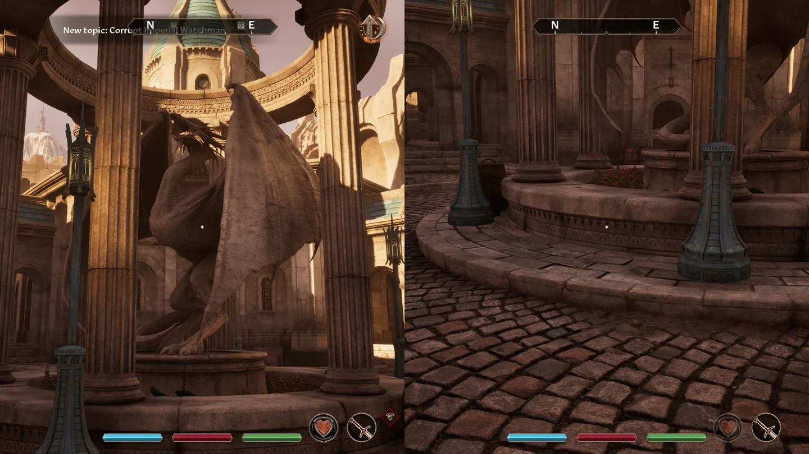
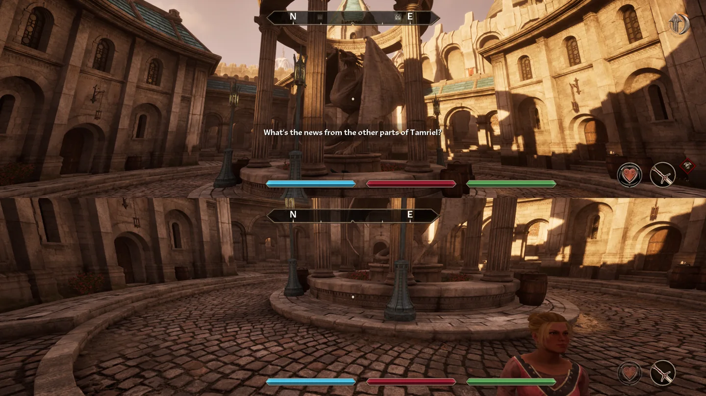
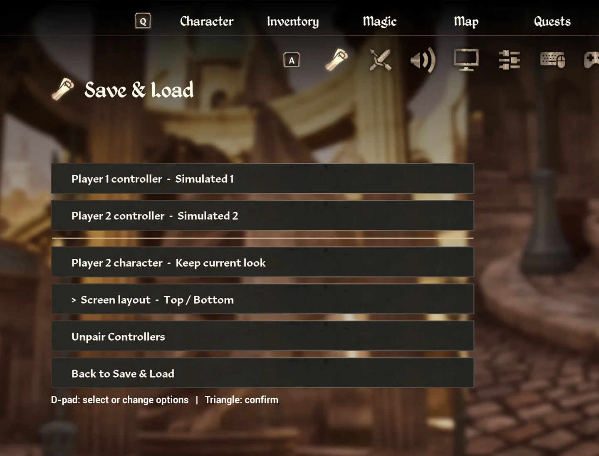

Windows · Steam
Oblivion Remastered
Local Split Screen
Explore Cyrodiil with two controllers on one PC. Pick a split that fits your screen and give each player their own view and centered compass.
Download Windows installerRun the downloaded setup to install. Manual ZIP

In-game layouts
Choose your split


Getting started
Install and join
- Close Oblivion Remastered. Download and run the Windows installer. It locates the Steam game or asks you to select the folder. The unsigned installer may show a Windows security prompt.
- Launch the game normally from Steam and load a spare save. Connect two controllers.
- Open System → Save & Load → Split Screen with the mouse or controller. You can also press Triangle on the Save & Load page.
- Choose Player 2's character and a layout. Player 1's controller is preselected. Press Options on the other controller to start. Reopen the menu to switch layouts or choose Unpair Controllers.
For the manual ZIP, extract it and run Install.ps1 from an administrator PowerShell. Verify either download with SHA-256.

Preview status
Two physical DualSense controllers were used to verify menu navigation and pairing. Both compasses show shared map markers and follow their own camera headings. Marker distances still come from Player 1’s position.
Player 2 uses the same ground movement limits as Player 1 and has a steady first-person camera. For shared dialogue, aim both players at the same NPC and press Square on Player 2’s controller. The conversation and choices appear on Player 2’s screen.
The installer includes the mod, UE4SS, and SDL. Per-player inventory requires a separately built OBSE64 backend. Independent loading-door travel, object interactions, and simultaneous dialogue are still in development.
To disable the mod, close the game and set LocalSplitScreen : 0 in OblivionRemastered\Binaries\Win64\ue4ss\Mods\mods.txt.